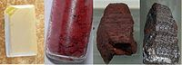

Numero atomico: 15
Massa atomica: 30,97
Temperatura di fusione (°C): 44
Temperatura di ebolizione (°C): 280
Energia di prima ionizzazione (kj/mol): 1012
Elettronegatività (secondo Pauling): 2,19
Densità: 1,82
Numeri di ossidazione: ±3+5
Configurazione elettronica: 1s2, 2s2, 2p6, 3s2, 3p3
Maggiori Informazioni